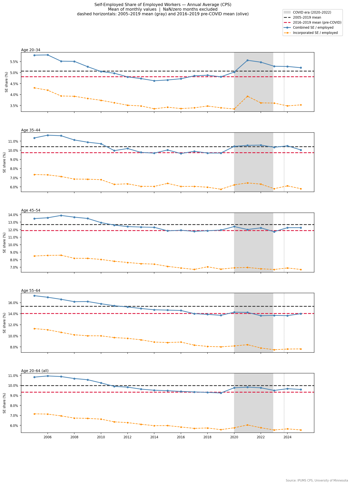
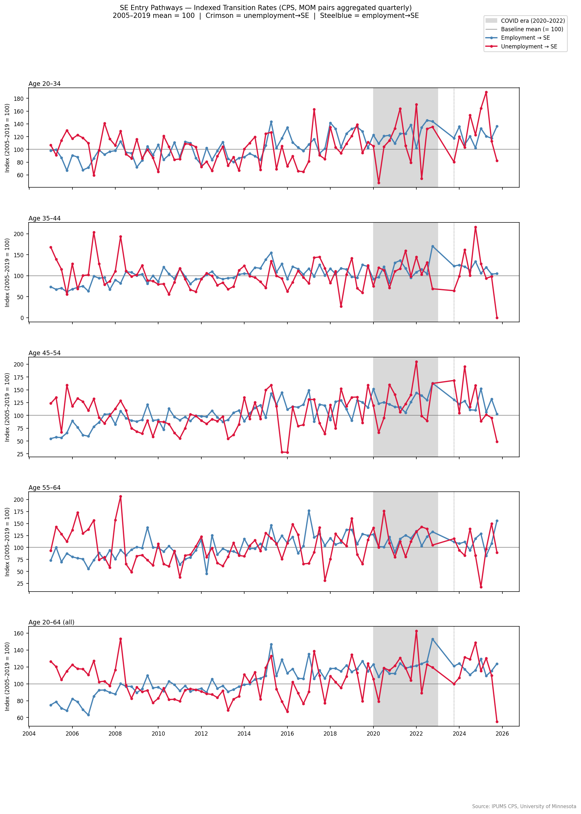
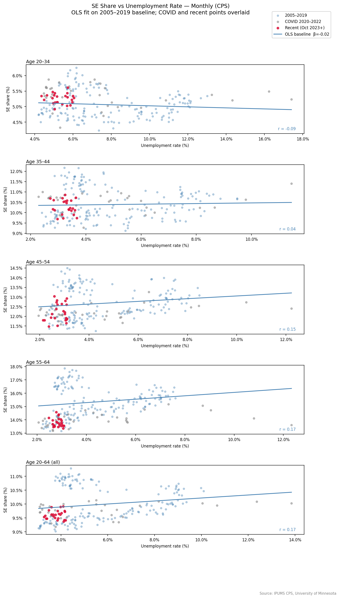
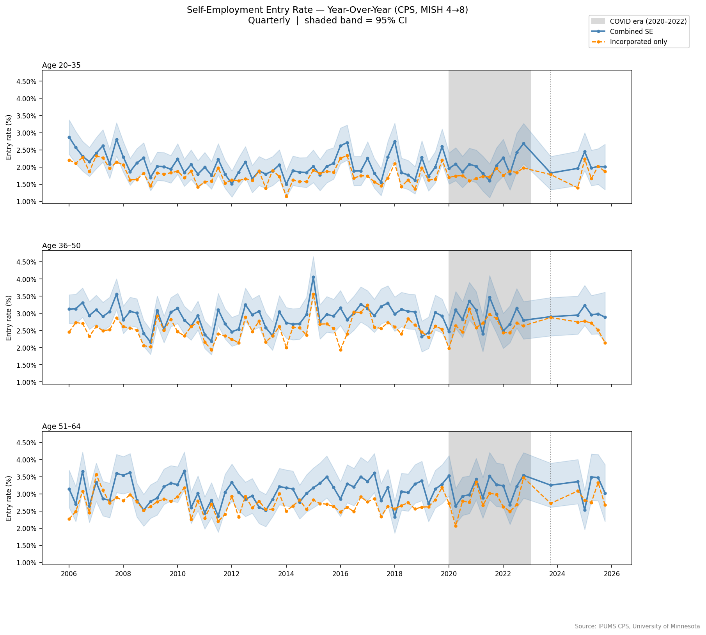

Key Findings
Summary
- All five age cohorts are above their 2016–2019 SE share — the post-COVID recovery in self-employment participation is broad-based, not confined to any one group.
- Workers 20–34 show the most striking recovery. Their SE share has returned to the long-run 2005–2019 mean — a level not sustained since the dot-com era — reversing a 15-year secular decline.
- The mechanism for 20–34 is opportunity, not necessity. Post-COVID SE entry in this cohort is driven by employed workers choosing self-employment, not unemployed workers being pushed into it. The pattern for 55–64-year-olds is the reverse.
- Durable formation rates are broadly at historical norms. Year-over-year entry rates (the most stable measure of lasting business formation) are near baseline for all cohorts. The elevated stock reflects accumulated entry over several years combined with solid persistence rates.
1 The Stock Recovery — All Cohorts Above Pre-COVID Baseline
The share of employed workers who are self-employed fell steadily from the early 2000s through 2019 across every age group. The COVID-19 pandemic and its aftermath reversed that trend. As of 2024–2025, every cohort is above its 2016–2019 average — the immediate pre-pandemic baseline — and several are approaching or exceeding their long-run 2005–2019 mean.

Age 20–34: A Structural Break
The youngest cohort tells the clearest story. Their SE share declined from a peak near 5.5% in the early 2000s to a trough around 4.5% in the late 2010s — a 15-year erosion. Post-COVID, that decline has fully reversed. The 2023–2025 annual averages are above the crimson 2016–2019 reference line and tracking near the gray 2005–2019 long-run mean. This is the first sustained period above the pre-COVID baseline since the dot-com era.
Ages 35–64: Recovery, but From Lower Levels
Older cohorts saw a much steeper secular decline — SE share fell by 3–5 percentage points from 2004 to 2019 in the 45–54 and 55–64 groups. The post-COVID recovery is real but incomplete: all cohorts are above the 2016–2019 line, but still well below their 2004 peaks. The 55–64 group has recovered the most ground in absolute terms; the 35–44 group the least.
2 Opportunity, Not Necessity — The 20–34 Entry Pathway
Not all SE entry is equal. Workers pushed into self-employment by unemployment — "necessity entrepreneurship" — tend to form less durable, lower-quality businesses than those who leave stable employment by choice — "opportunity entrepreneurship." The pathway matters for interpreting the post-COVID surge.
To distinguish the two, we compute separate monthly transition rates from the CPS rotation structure:
- Unemployment → SE: share of unemployed workers at month T who are self-employed at month T+1
- Employment → SE: share of employed, non-SE workers at month T who are self-employed at month T+1
Both rates are indexed to their 2005–2019 average (= 100) so they can be compared on a common scale despite very different base levels. Pairs are aggregated quarterly to reduce noise in the unemployment pathway, where the denominator (unemployed persons in a given rotation cohort) is small.

Age 20–34: Employment → SE Is the Active Channel
For the youngest cohort, the unemployment→SE pathway (crimson) spiked sharply during the COVID lockdowns and then fully reverted to baseline. The employment→SE pathway (steelblue) has been running modestly but persistently above 100 in the recent period — meaning young workers with jobs are choosing self-employment at a slightly elevated rate relative to history. This is the signature of opportunity entrepreneurship.
Age 55–64: The Opposite Pattern
Older workers show the reverse: the unemployment→SE index remains notably elevated post-COVID while the employment→SE channel has mean-reverted. This is consistent with a necessity story — older workers displaced from jobs and entering self-employment as an alternative to continued unemployment.
Ages 35–54: Broad Mean Reversion
Both pathways spiked during COVID for these cohorts and have largely returned to baseline. No unusual post-COVID elevation in either channel.
3 Self-Employment Is Not Just a Cyclical Response
One natural question: is the post-COVID SE recovery simply a function of a tight labor market pushing up SE share mechanically (lower unemployment denominator in the labor force, fewer people cycling through unemployment)? The scatter below suggests the answer for 20–34 is no.

For the 20–34 cohort, the historical relationship between SE share and unemployment is essentially flat (r = −0.09, β = −0.09) — SE participation in this age group was never strongly cyclical. Critically, the recent crimson points cluster above the OLS baseline, meaning the current SE share is higher than the historical unemployment rate alone would predict.
Older cohorts show the expected positive correlation (higher unemployment → more necessity SE), but even there, the recent post-COVID points do not fall on the baseline relationship in a way that would make the recovery look purely mechanical.
4 Flow Rates — Entry Is Near Historical Norms
The stock analysis above measures who is self-employed at a point in time. The flow analysis measures who enters self-employment. We use two methods from the CPS rotation structure:
- Month-over-month (MOM): tracks person transitions between consecutive survey months. Captures rapid and gig-economy entry; higher volatility.
- Year-over-year (YOY): matches the same person at MISH 4 and MISH 8 (~12 months apart). Captures durable business formation; lower volatility but carries a ~15-month publication lag.

Year-over-year entry rates are broadly at or near historical baseline for all cohorts. There is no dramatic spike in durable new business formation — the elevated stock is better explained by the compounding effect of several years of flows that are modestly above (or at) their pre-COVID trough, combined with solid persistence rates (the fraction of SE workers who remain SE 12 months later).
Month-over-month rates for 20–34 show more individual months above their seasonal baseline, particularly in 2024, but the YOY series — which filters out short-lived or abandoned attempts — is more muted. Where MOM is elevated but YOY is not, the signal is workers testing self-employment rather than committing durably.
Methodology
Data source
U.S. Census Bureau & Bureau of Labor Statistics, Current Population Survey (CPS) basic monthly microdata, 2005–2025. Accessed via IPUMS CPS, University of Minnesota.SE definition
CLASSWKR = 13 (incorporated) or 14 (unincorporated). Combined SE and incorporated-only tracks reported separately throughout. Stock counts include all employed workers (EMPSTAT 10 or 12).Matching
Persons matched on CPSIDP across rotation positions. MOM: consecutive MISH values within a rotation stint. YOY: MISH 4 → MISH 8 (~12 months). Matches validated on age (±1 year) and sex.Entry rate
Follows Kauffman New Entrepreneur Rate: (weighted count of non-SE at T₀ who are SE at T₁) ÷ (weighted count of employed non-SE at T₀). YOY weight: LNKFW1YWT. MOM weight: WTFINL at T₀.Baseline period
2005–2019 (primary). 2016–2019 used as immediate pre-COVID reference. COVID years (2020–2022) excluded from all baseline calculations. Recent window: October 2023 onward.Confidence intervals
Normal approximation with design-effect scalar DEFF = 1.5, applied as SE = √(DEFF · p(1−p)/n). Conservative scalar for CPS stratified cluster sampling; PSU/stratum variables not in extract.
Primary data citation:
Sarah Flood, Miriam King, Renae Rodgers, Steven Ruggles, J. Robert Warren,
Daniel Backman, Annie Chen, Grace Cooper, Stephanie Richards,
Megan Schouweiler, and Michael Westberry.
IPUMS CPS: Version 12.0 [dataset].
Minneapolis, MN: IPUMS, 2024.
https://doi.org/10.18128/D030.V12.0
Underlying survey:
U.S. Census Bureau and U.S. Bureau of Labor Statistics.
Current Population Survey.
Washington, DC: U.S. Census Bureau.
census.gov/programs-surveys/cps
Methodological reference:
Kauffman Foundation. New Employer Business Rate.
Kansas City, MO: Ewing Marion Kauffman Foundation.